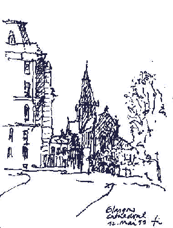
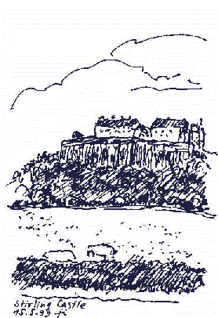
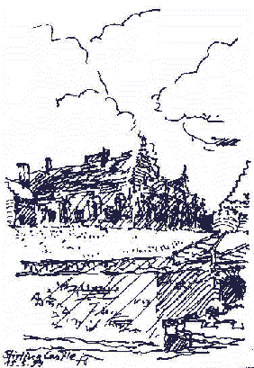
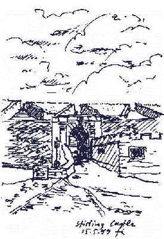
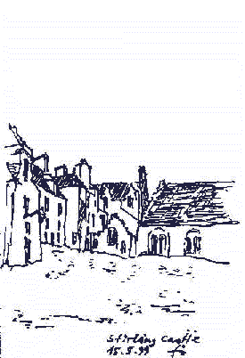
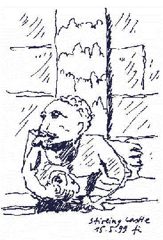
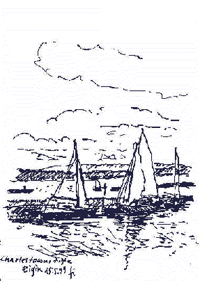
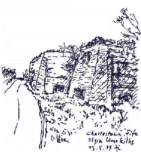
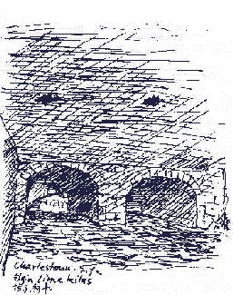

Weitere Datenübertragung Ihres Webseitenbesuchs an Google durch ein Opt-Out-Cookie stoppen - Klick!
Stop transferring your visit data to Google by a Opt-Out-Cookie - click!: Stop Google Analytics
Cookie Info. Datenschutzerklärung
 Konrad Fischer's Altbau und Denkmalpflege Informationen
Startseite - Main Page / Masthead
Konrad Fischer's Altbau und Denkmalpflege Informationen
Startseite - Main Page / Masthead
Architectural Sketches from castles of the Beaujolais
Architectural Sketches from the Rhine-Moselle-Region
Rilem-Lecture (Historic Mortar)
English site

The RILEM Excursion May 1999 in Scotland - Architectural Sketches made / designed /sketched by Konrad Fischer

Glasgow - The Cathedral


Stirling Castle





Charlestown, Fife - The Firth of Forth (From here the burnt lime from the
kilns had been exported over hundreds of years)


The historic limekilns (from out- and inside) of Charlestown, Fife
Altbau und Denkmalpflege Informationen Startseite - Main Page
The Author
Sketches from castles of the Beaujolais
Architektural Sketches from the Rhine-Moselle-Region
Rilem-Lecture (Historic Mortar)
English site